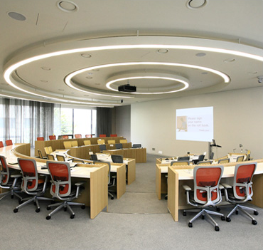

"사람은 두산의 지난 120년을 이끌어 온 힘 이자 향후 120년 이상의 성공을 지속할 수 있는 강력한 경쟁력의 원천이며, 사람에 대한 이러한 믿음은 두사의 경영전략의 중심입니다."
성장을 위한 공간
성장을 향한 개인의 노력을 지원하기 위해 접근성이 높은 곳에 별도의 공간을 마련하였습니다.
집합 교육과 온라인 교육 참여, 팀 워크샵, 크고 작은 회의를 위해 자유롭게 사용됩니다.
-
두산 연강원/DLI (Doosan Leadership Institute)서울에 위치한 그룹 연수원으로 그룹의 리더십 양성 기능을 담당. 두산의 구성원들이 교육을 통해 지식과 마음을 재충전할 수 있도록 최적의 교육 시설과 아름다운 정원 휴식 공간 제공
-
 분당두산타워 공용공간 Open Innovation Center미래를 만드는 두산 그룹의 창의 혁신 센터. 자유로운 소통과 만남, 아이디어의 발굴과 구체화가 가능한 창의적 분위기의 공간으로 구성원들의 학습과 창의적 컨텐츠 생산을 지원
분당두산타워 공용공간 Open Innovation Center미래를 만드는 두산 그룹의 창의 혁신 센터. 자유로운 소통과 만남, 아이디어의 발굴과 구체화가 가능한 창의적 분위기의 공간으로 구성원들의 학습과 창의적 컨텐츠 생산을 지원 -
 동대문두산타워 Education Center동대문 두산타워에서 근무하는 구성원들의 학습을 위한 별도 공간으로, 타운홀을 위한 대형 강의장과 개인 별 온라인 학습이 가능한 다목적 회의실 공간 제공
동대문두산타워 Education Center동대문 두산타워에서 근무하는 구성원들의 학습을 위한 별도 공간으로, 타운홀을 위한 대형 강의장과 개인 별 온라인 학습이 가능한 다목적 회의실 공간 제공 -
 두산에너빌리티 창원 Learning Center두산에너빌리티 창원 본사에 위치한 교육 시설로 대강의장과 다양한 형태의 학습과 논의가 가능한 강의장, 회의실 공간 제공
두산에너빌리티 창원 Learning Center두산에너빌리티 창원 본사에 위치한 교육 시설로 대강의장과 다양한 형태의 학습과 논의가 가능한 강의장, 회의실 공간 제공
성장을 위한 지원
탁월함을 향한 개인의 노력에 든든한 조력자가 될 수 있도록 전문화된 교육 프로그램과 성장의 기회를 제공합니다.
-

-
온보딩 프로그램새로운 환경에서도 개인이 잠재력을 잘 발휘할 수 있도록 두산의 문화와 일하는 방식을 이해할 수 있는 그룹 차원의 두산 입문 교육, 선배의 멘토링 등을 입사 초기에 집중 지원
-
사내 리더십 교육준비된 리더로 성장할 수 있도록 두산인으로서 갖추어야 할 공통 역량과 리더십 역량을 강화하기 위한 다양한 교육 프로그램 제공
-
사내 공통 역량 교육기업 운영과 여러 부서 간의 공동 작업을 이해하고, 협업을 이끄는 전문가로 성장 할 수 있도록 전략적 업무 추진, Reporting 노하우 등 공통 역량을 향상하는 교육 프로그램 제공
-
사내 직무 교육각 사의 산업과 직무 영역에 따라 다양한 사내 직무 역량 심화 교육 프로그램과 외부 교육 참여의 기회 제공
-
주재원 제도두산 해외 지점/자회사에서 주재원으로 근무하여 글로벌 인재로 성장할 수 있는 기회 제공
-
사내 공모 제도 (Internal Job Posting)그룹 내에서 직무 전환이 가능하도록 사내 공모 제도로 두 번째 커리어 기회 제공